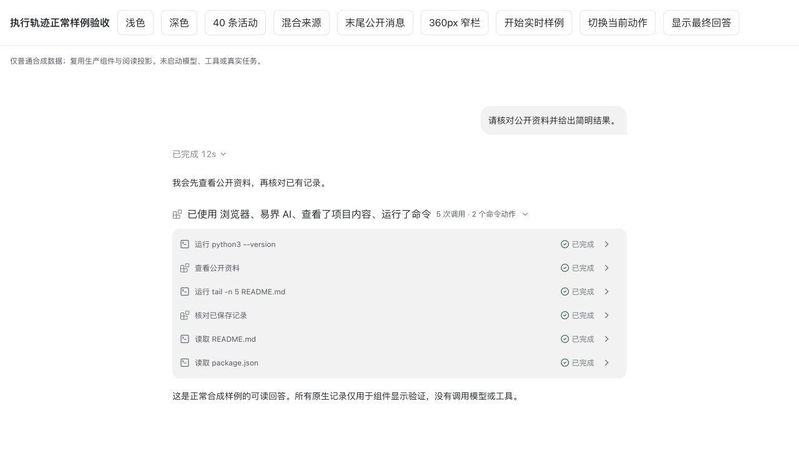
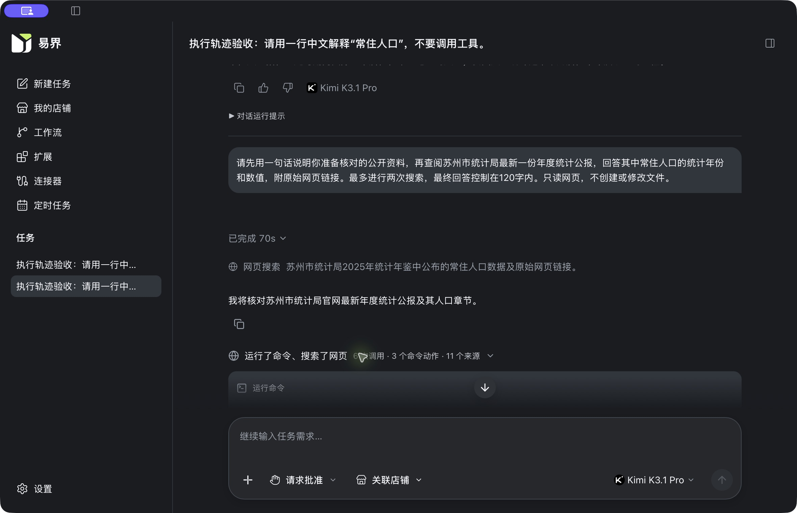

执行轨迹复审修复已完成
保留原生事实，单独派生活动行与分组；当前状态在原位更新。继续使用 Native6 / SSE13 / IPC6 / format6，不清库、不迁移、不包含 diff。
完成的关键行为
72 → 40
72条事实全部保留，普通列表为40条工具活动，推理不占活动行。
1 次调用 ≠ 1 行
原生命令动作可以拆成多行，沿用父Item状态、输出和身份。
状态与内容分开
输出等待、参数隐藏不会抹去可信的运行状态。
命令安全预览、工具标题、来源摘要、单项组、稳定展开、头部切换、未知阶段最后回答与末尾 commentary 阅读候选均已接通。
后端到前端
| 模块 | 实现结果 | 落点 |
|---|---|---|
| Runtime | 复用原有 Item、phase、commandActions、计划和 retry；源码/补丁未新增。 | yijie-codex@55b4e51049d6f4fc0af4b35f12832357f5e4ea06 |
| 契约 | 继续 Native6 / SSE13 / IPC6 / format6；没有新增 wire 字段或数据库迁移。 | Contracts dfd9012954c716d360f702d6be3bdbdef75e0633；consumer 符合性 |
| Host | 安全命令预览、相对路径按命令 cwd 解析、appContext/已知注册工具/允许的 js.title 与来源。 | internal/session/native_trace.go、native_conversation.go |
| Native | 普通输出等待不毒化整轮诊断；真实缺口不被清除；已有诊断由新阅读规则兼容解释。 | src-tauri/src/chat/native_conversation.rs |
| 存储/IPC | 保留现有事实、format6 和 revision；正常重开不改写已有 view_json；复用事务后发布。 | native_conversation_storage.rs、database.rs 验证、IPC6 |
| 事实视图 | 内容部分隐藏与可信运行状态分开；冷历史仍不激活。 | conversation-trace-liveness.ts、conversation-timeline.ts |
| 阅读投影 | ActivityEntry 与 Item 分离；推理过滤、命令动作拆行、稳定身份、阅读候选及头部状态。 | conversation-activity-entry/presentation/summary.ts |
| 组件 | 具体行预览、混合来源摘要、有界列表、单项组优化、通知显示折叠、尾部消息保持可读。 | ChatActivityGroup / ChatActivityRow / ChatTurnGroup / ChatTraceNotices |
| 交互状态 | 同 key 文本即时、跨 key 稳定化；保留用户选择与耗时行锚点；不持久化分组偏好。 | useActivitySummary.ts、chat-trace-presentation.store.ts |
v2 · 26 项逐项结果
按所列当前能力和证据层次判定。当前fork没有partial_answer枚举；没有把未新增的通用问卷或动态工具接口写成已支持。默认公开说明模式为all，latest边界由纯投影验证。
| 编号 | 判定 | 行为 | 证据 |
|---|---|---|---|
| A01 | 通过 | 公开说明分段，普通推理不占工具行。 | ChatTraceV2Acceptance.test.ts · A01/A02；真实 Kimi/MiniMax 历史 |
| A02 | 通过 | 72 条原生事实保留；40 条工具活动、1 个连续组；reasoning 行为 0。 | 组件测试；浏览器实测 40 行、320px 容器 |
| A03 | 通过 | 相同查询、不同原生 ID 均保留；不按文本去重调用。 | A03；Native interleaved/deduplication |
| A04 | 通过 | started/delta/completed 更新同一 Item，最终快照替换草稿。 | native_final_replaces_delta_without_prefix_reconciliation；跨仓字节验证 |
| A05 | 通过 | 默认 all 保留公开说明；纯阅读层 latest 模式先分段再隐藏，不合并阶段。 | A05；当前产品默认 all |
| A06 | 通过（当前原生范围） | 未知阶段最后可读回答、末尾 commentary 阅读候选均外显，phase 不改。 | A06 两类边界及真实 unknown 历史；固定 fork 无 partial_answer 枚举，未新增该能力 |
| A07 | 通过 | 显式 final 后有已结束工具/网页/推理，正文仍可读。 | A07；ChatNativeStreaming |
| A08 | 通过 | 只有最新未关闭组承担当前状态；旧组详情仍保留并发未结束状态。 | A08 |
| A09 | 通过 | 工具结束后当前组头显示思考；只有推理时显示一个系统状态。 | A09/A25 |
| A10 | 通过 | 同 key 文字立即更新；key 切换按 1 秒窗口稳定；完成摘要立即替换。 | A10 虚拟时钟；真实组件实时样例 |
| A11 | 通过 | 空推理结束不改组键；单条命令补齐一个动作不重建行；用户展开保持。 | A11 两项；组内键盘/滚动观察 |
| A12 | 通过 | 显式最终正文开始且无用户选择时折叠过程；手动展开优先。 | A12；ChatActivityGroup |
| A13 | 通过（已选策略） | 当前挂载会话内保留选择，切上下文/重挂载清空，不承诺跨重启。 | A13；ChatTimeline 重排与选择测试 |
| A14 | 通过 | 中断保留已有消息和工具状态；未结束 Item 与计划不被标成功。 | A14；Native terminal/plan 正常状态样例 |
| A15 | 通过 | 失败、缺少退出码、成功空输出分别呈现；不以无输出推导成功。 | A15 |
| A16 | 通过（已接入交互） | 原生审批和决策瞬态外显；最后可读用户交互消息不被过程折叠。 | ChatTimeline/ChatTurnGroup 审批桥接与正文保持；未新增通用问卷式 requestUserInput 执行接口 |
| A17 | 通过 | 保留 retry true/false/unknown；连续等价提示仅在显示层折叠。 | A17；Host/Native retry intent 测试 |
| A18 | 通过（已知恢复窗口） | 传输序号去重、完成快照保护、正常重开及冷历史冲突选择均核验。 | 跨仓 SSE→Native→SQLCipher→重开→前端；不声称任意乱序的通用 exactly-once |
| A19 | 通过 | 冷历史的 inProgress 不冒充实时；普通输出策略/参数隐藏不误伤活跃状态。 | P1 四项测试；A19；真实历史无活动动画 |
| A20 | 通过 | 长列表有限高、末尾无空白；组内与页面可分别滚动；最小窗口可读。 | 浏览器 1180×760、360px 正文；实际 App 1180×760、100%/200% |
| A21 | 通过 | 按钮、展开语义、焦点和键盘滚动；系统减少动态效果时扫光为 none。 | PageDown/End/Shift+Tab/Return；axe 回归；reduced-motion.json 实测 |
| A22 | 通过 | 安全预览、原生路径/查询、可信标题；缺失诚实兜底，other 网页不冒称搜索。 | Host 普通样例、未变 v6 consumer conformance、A22 |
| A23 | 通过 | 计划独立呈现最新值，结束/中断不自动勾选未完成步骤。 | A14/A23；Native plan 与现有 ChatTurnPlan 测试 |
| A24 | 通过 | 多个动作引用父 Item，一次调用；展开只查看，不执行/批准/重放。 | A24；真实历史展开；跨仓 3 调用→4 展示行 |
| A25 | 通过 | 无 commentary 仍有当前状态/真实工具组；不生成假 assistant 进度。 | A09/A25；推理事实保留但不生成零调用组 |
| A26 | 通过（易界策略） | 失败、待审批和不完整记录保留在折叠外。 | A26；既有审批/不完整记录正常组件回归 |
保留原有新格式会话
原2个会话、4轮正文均可读取。两个Runtime rollout文件逐字未变，任务启动与完成仍各4次。本轮没有新模型回合，没有重放或清库。
SQLCipher文件因正常应用状态写入而变化，不宣称全库逐字不变；未改schema、未执行删除或迁移。正常读回测试另验证view_json与事实数量不被读取改写。
旧记录未保存的命令和标题不猜测回填；新事件带安全预览。查看数据证据 · 恢复入口后的再次核对
验证结果
- 前端：2,101项通过，16跳过；Node脚本27项通过。
- Native：默认626、日常Kimi配置661项通过；另记录ignored及安全过滤，不冒充执行。
- Host race、完整lint/类型检查、两配置clippy、跨仓实际投影字节、SQLCipher正常重开、构建与文档构建通过。
- 元仓文档治理57项测试、契约引用与时序索引校验通过；正式发布门禁状态不变。
- 实际应用：原4轮历史、1180×760及1268×780、100%及200%、亮暗主题；组件长列表、键盘、窄栏与系统减少动态效果。
恢复了系统浅色、减少动态效果关闭、应用100%；正常退出调试版，固定开发入口已重新运行。未提交、推送或生产发布。

